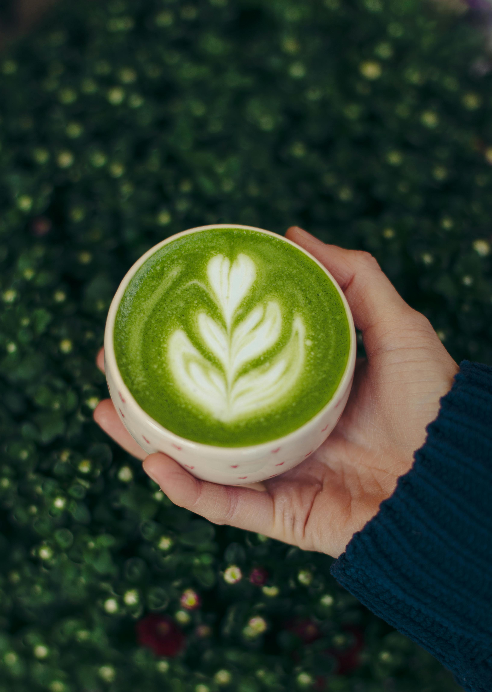

Home
Creamy Matcha Latte
⏳Prep Time: 5 mins | 🍵 Servings: 1

Description:
Before the first sip comes the ritual.
The quiet scrape of bamboo against bowl, the bloom of emerald powder in warm water, the slow pour of milk like clouds parting. This is matcha at its simplest—pure, meditative, and alive with earthy sweetness.
Ingredients:
- 1 tsp ceremonial-grade matcha powder (sifted).
- 2 tbsp hot water(175°F/80°C).
- 1 cup (240ml) milk (dairy, oat, or almond).
- 1 tsp honey or maple syrup (optional).
- Ice (for iced version)
Instructions:
- Whisk matcha: n a bowl, mix sifted matcha with hot water until frothy (use a bamboo whisk or small frother).
- Heat milk: Warm milk on the stove or microwave (skip for iced latte). Froth if desired.
- Combine: Pour matcha into a cup, add milk, and sweeten to taste.
- Iced version: Skip heating milk, add ice, and shake for a refreshing drink.
💡 Pro Tips:
- No clumps: Always sift matcha first!
- Extra foam: Froth milk with a handheld frother.
- Decorate:Dust with matcha or add latte art.